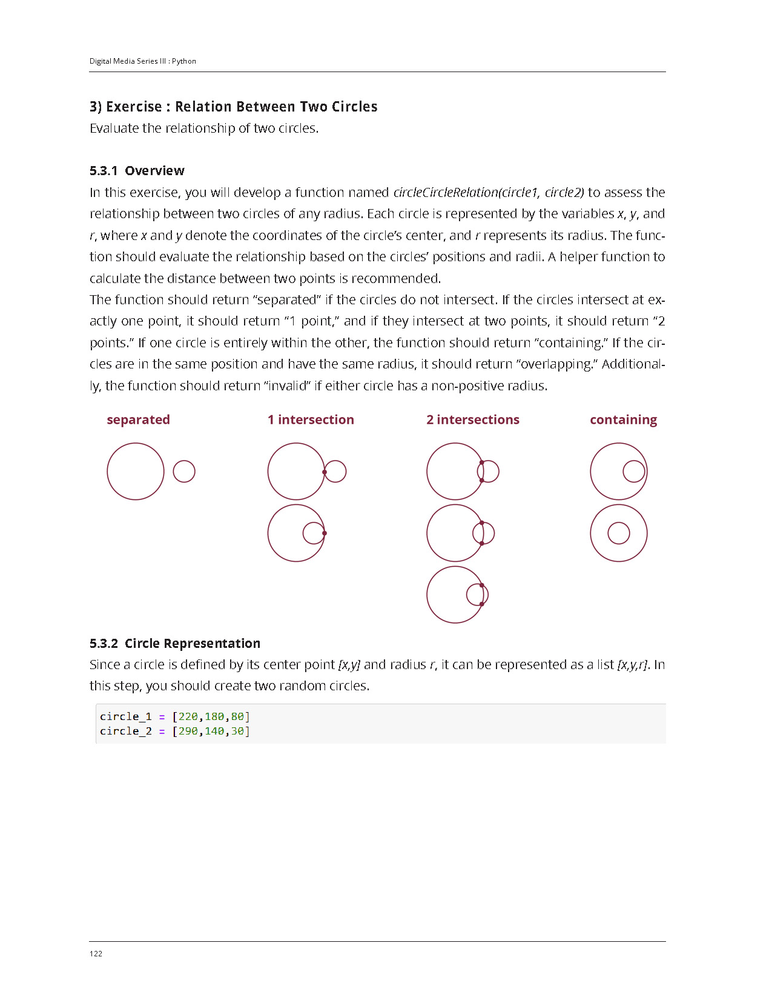
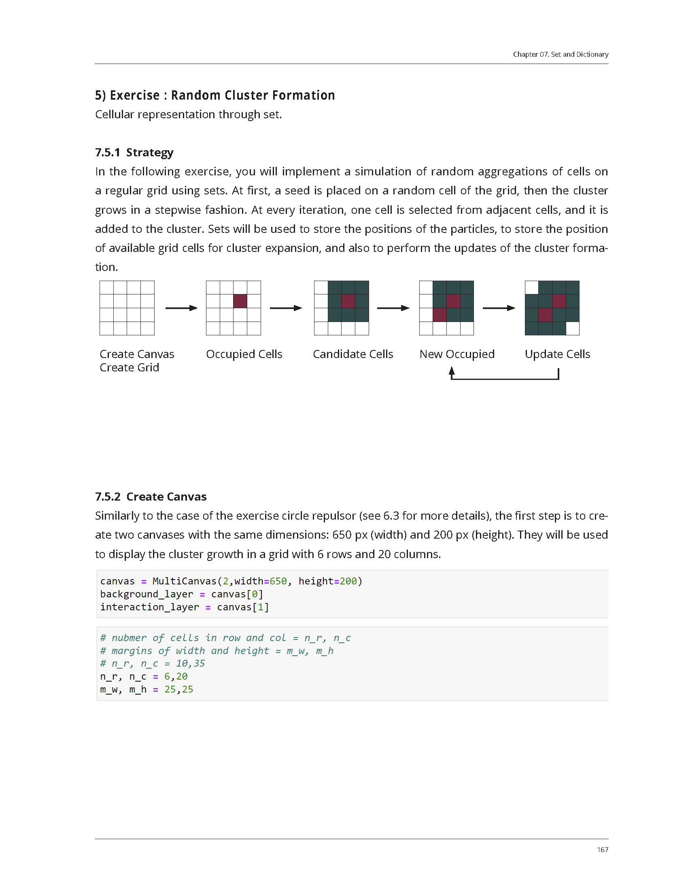
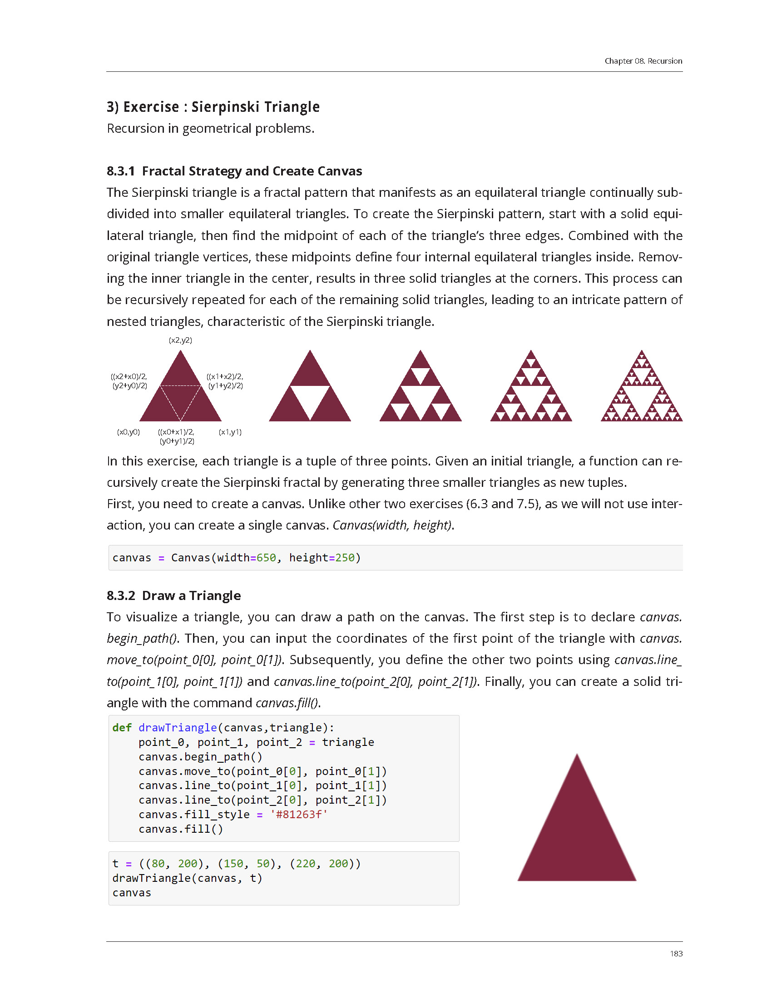
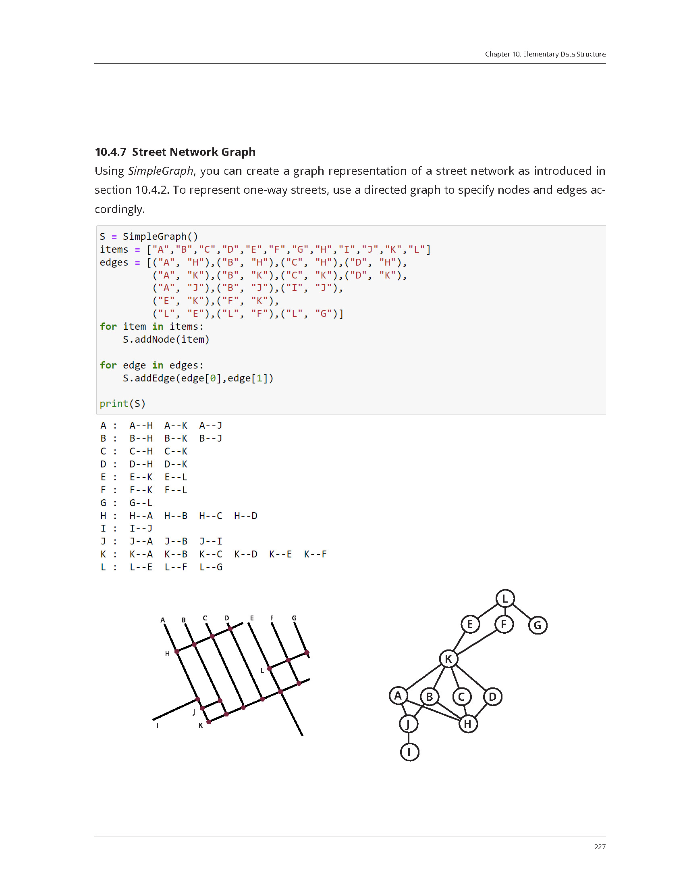

Generative design, responsive design, robotic fabrication, and Artificial Intelligence (AI) design represent pivotal topics in the contemporary discourse on computational design. The advancement of diverse software tools has catalyzed the integration of computational methods into design processes, fostering the exploration of innovative and complex design solutions. Within this framework, the ability to interpret and apply design concepts through computational lenses is becoming increasingly crucial. Consequently, designers must be well-versed in key computational concepts such as data structures, representation, algorithms, and processing techniques, all of which are fundamentally supported by programming skills.
The progression of programming languages has markedly improved accessibility, with Python emerging as a preeminent choice due to its extensive use and popularity. Python is renowned for its low learning curve and high utility, making it exceptionally valuable in design-related tasks. These tasks include geometric computations, the implementation of generative algorithms, urban data processing and analysis, simulations, and the generation of forms using AI techniques. Python’s versatility and ease of use make it an ideal tool for designers seeking to incorporate computational methods into their workflows.

Despite the abundance of tutorial books and online courses available for self-learning Python, these resources often present Python concepts in a conventional manner, grounded in general computational knowledge systems. For individuals in the creative domain, this approach can be overwhelming and excessively tedious. Moreover, such resources frequently fall short in illustrating the practical application of these concepts in design contexts. This book seeks to address this gap by offering a foundational guide tailored specifically for users in the creative domain, enabling them to learn Python efficiently and apply it effectively to their design projects.

For effective self-learning using this book, readers are encouraged to download the accompanying Jupyter Notebook files. The files in the learner directory are designed for practice, allowing readers to run examples from the book and engage in scripting exercises with omitted lines. The educator directory contains fully written solutions and examples for reference, enabling users to verify their work.

We anticipate that this book will empower more individuals in the creative domain to learn Python with ease, integrate it seamlessly into their respective fields, and ultimately expand their creative potential.

You can buy this book on Amazon® on the right column.